Data as of March 2026
Country Report · Canada
Within the analysis of the Canadian situation, we strive to integrate immigration data, which, in particular, might be sparse, with compositional data to provide a more comprehensive view. Our perspective is rooted in feature extraction and dimensionality reduction techniques.
Canada operates one of the world's most explicitly economic-selection-oriented immigration systems. Through the Express Entry management system and expanding Provincial Nominee Programs, Canada admitted 405,000 permanent residents in 2024, maintaining one of the highest per-capita immigration rates among OECD countries. The foreign-born share of the population (23.0%) is the highest among G7 nations.
This country report provides disaggregated analysis of admission flows by stream, Express Entry CRS score dynamics, provincial settlement patterns, earnings convergence trajectories, and the demographic profile of Canada's immigrant population. Navigate through the indicator tabs above to explore each dimension.
Permanent resident admissions by calendar year compared to government Immigration Levels Plan targets, with stream-level decomposition.
Figure CA-1
Government targets (dashed) vs. actual landings by year. Source: IRCC.
Figure CA-2
Shift from European to South/East Asian and African source regions. Source: IRCC.
Figure CA-3
Economic, family, refugee/protected persons, and H&C. Source: IRCC.
Canada's permanent immigration volumes have increased substantially from approximately 85,000 in 1985 to 405,000 in 2024, with the most aggressive growth occurring under the 2021–2023 Immigration Levels Plans. The government's multi-year planning approach — unique among major immigration countries — allows for announced targets that signal anticipated volumes to provinces, settlement agencies, and labor markets.
Source-country composition has shifted dramatically. In 1980, the top five source countries were the United Kingdom, India, Vietnam, Hong Kong, and the Philippines. By 2024, India alone accounts for approximately 25% of all permanent residents, followed by the Philippines, China, Nigeria, and Afghanistan.
CRS score dynamics, draw frequency, category-based selection, and applicant profile trends since January 2015.
Figure CA-4
All-program draws and category-based draws shown separately. COVID pause period indicated. Source: IRCC.
Figure CA-5
Distribution by 10-point bins. Median and interquartile range indicated. Source: IRCC.
Figure CA-6
FSWP, CEC, PNP-linked, and category-based (healthcare, STEM, French). Source: IRCC.
The Express Entry system has undergone significant evolution since its 2015 launch. Initial draws invited candidates with CRS scores above 450; subsequent rounds saw cutoffs decline to the 440–470 range as pool size grew. The introduction of category-based selection rounds in 2023 — targeting healthcare workers, STEM professionals, French-language speakers, trade workers, and agriculture/agri-food workers — has diversified the profile of invited applicants and created multiple effective cutoff tiers within the system.
Processing time has been a key performance indicator. After deterioration during the COVID-19 period (median times exceeding 12 months), IRCC has restored processing to approximately 5–6 months for the majority of Express Entry applications, meeting its stated service standard.
Labor market outcomes, earnings trajectories, income distributions, poverty measures, and regression-based analyses of economic integration for Canada's population (Census 2021).
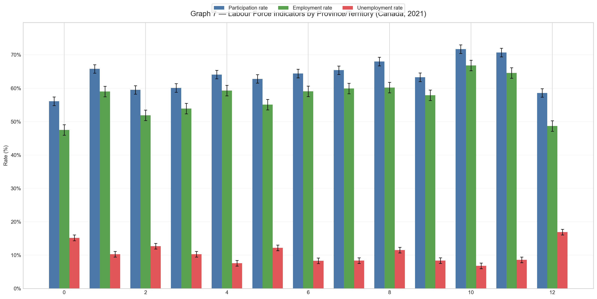
Graph 7 — Census 2021
Participation rate, employment rate, and unemployment rate with 95% Wilson confidence intervals by province/territory.
Provincial labour force participation and employment rates exhibit substantial geographic heterogeneity, with Yukon and Northwest Territories recording the highest participation rates (≈71%), attributable to resource-extraction economies and below-average dependency ratios, while Nunavut shows an anomalously elevated unemployment rate (≈17%) despite moderate participation, consistent with structural skill-mismatch in remote labour markets.
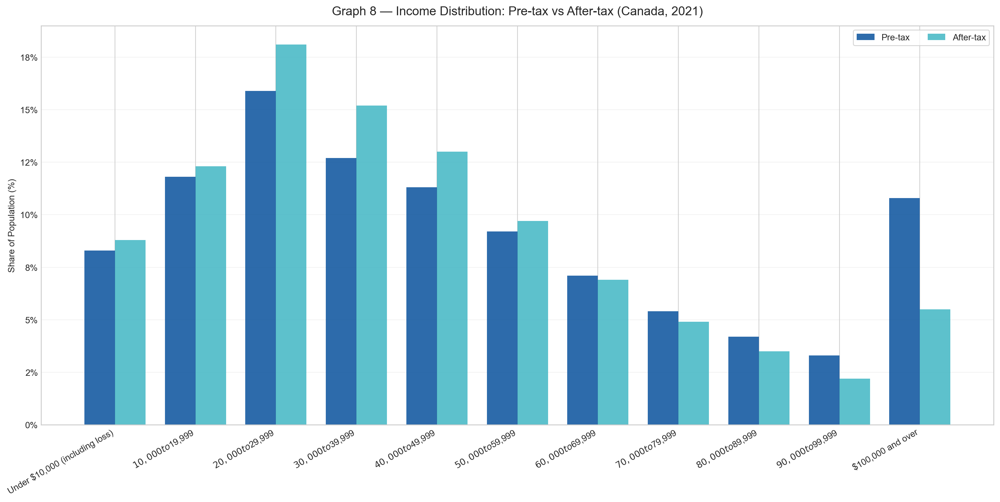
Graph 8 — Census 2021
Share of population in each $10,000 income bin for pre-tax and after-tax total income.
The after-tax distribution is right-shifted relative to pre-tax income at the $20,000–$40,000 range — reflecting the net effect of refundable credits and transfers — while the pre-tax distribution exhibits a heavier right tail above $100,000, consistent with Canada's progressive marginal rate schedule compressing the post-tax distribution at the upper deciles.
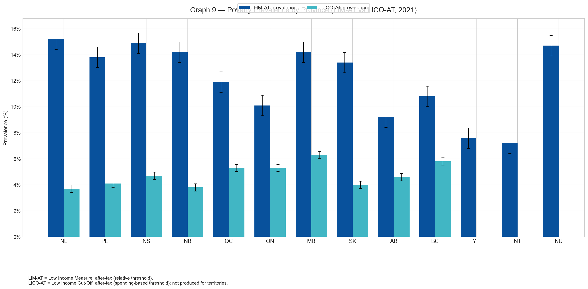
Graph 9 — Census 2021
LIM-AT (relative threshold, 50% of median after-tax income) and LICO-AT (spending-based absolute threshold) with 95% Wilson confidence intervals. LICO-AT not produced for territories.
LIM-AT systematically exceeds LICO-AT in all provinces, with the gap ranging from ≈10 percentage points in Newfoundland and Nova Scotia to ≈6 points in Ontario and BC; the two measures diverge directionally for territories — Nunavut's LIM-AT rate (≈15%) is among the highest nationally despite LICO-AT's inapplicability — underscoring the sensitivity of poverty measurement to the choice of relative versus absolute threshold.
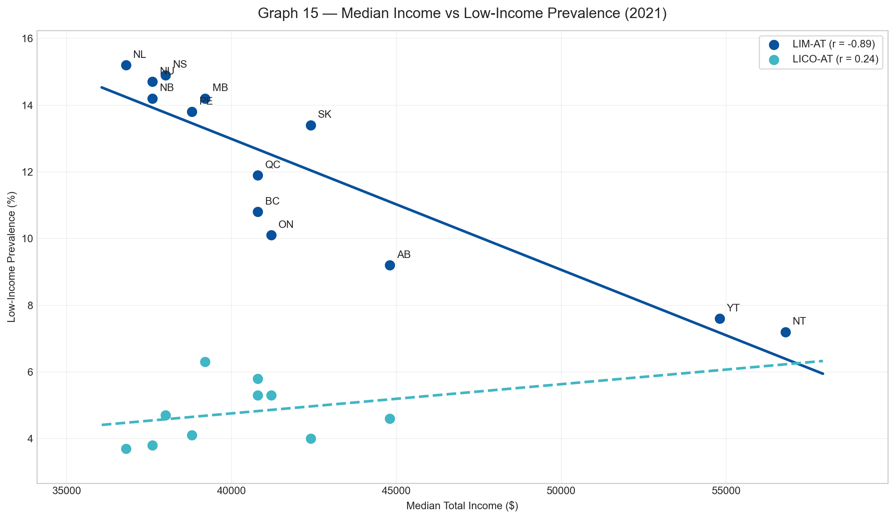
Graph 15 — Census 2021
Cross-provincial scatter of median total income against LIM-AT and LICO-AT prevalence with Pearson correlations.
The LIM-AT measure exhibits a strong negative correlation with median income (r = −0.89), mechanically consistent with its construction as a relative threshold, while LICO-AT shows a near-zero positive correlation (r = 0.24), reflecting its absolute spending-based threshold that does not co-move with median income; the divergence is most pronounced in the territories, where high median incomes produce low LIM-AT rates despite elevated cost-of-living-adjusted hardship.
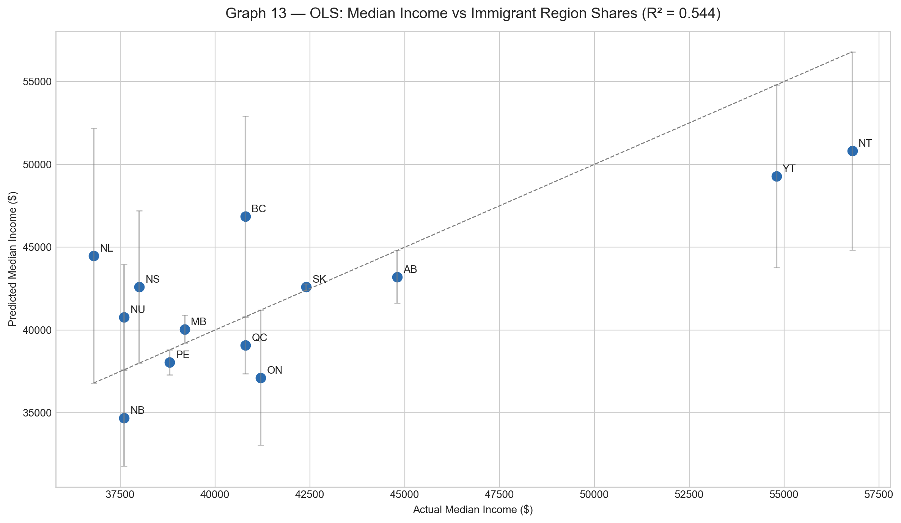
Graph 13 — Census 2021
Predicted vs. actual median income from an OLS model using immigrant region-of-birth shares as regressors; error bars are 95% prediction intervals.
The OLS model achieves an R² of 0.544, indicating that immigrant origin-region composition accounts for roughly half the cross-provincial variation in median income; notable residuals — Ontario and BC underpredicted, NT and YT well-fitted — suggest immigrant region composition is a proxy for broader economic and resource-endowment factors rather than an independent causal channel.
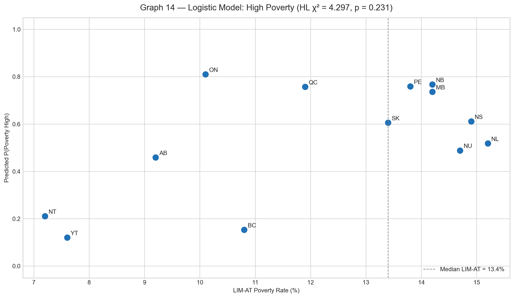
Graph 14 — Census 2021
Predicted probability of above-median LIM-AT poverty against actual LIM-AT rate; Hosmer-Lemeshow goodness-of-fit test.
The logistic model achieves adequate calibration (HL χ² = 4.297, p = 0.231), with BC and the territories assigned low predicted poverty probability despite varying LIM-AT rates, while Ontario's high predicted probability (0.81) at a 10% LIM-AT rate reflects covariate patterns — urban density and housing cost burden — that the model captures beyond the poverty rate itself.
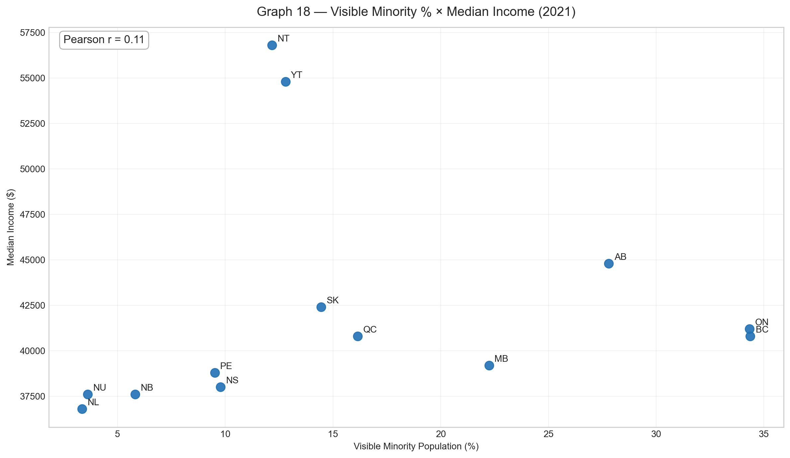
Graph 18 — Census 2021
Cross-provincial scatter with Pearson r = 0.11.
The near-zero positive correlation (r = 0.11) between visible minority share and median income is inconsistent with a simple wage-dilution hypothesis and reflects omitted confounders — principally industrial composition; NT and YT drive the positive trend through resource wage premiums, while high-minority provinces (ON, BC) cluster near the sample income median.
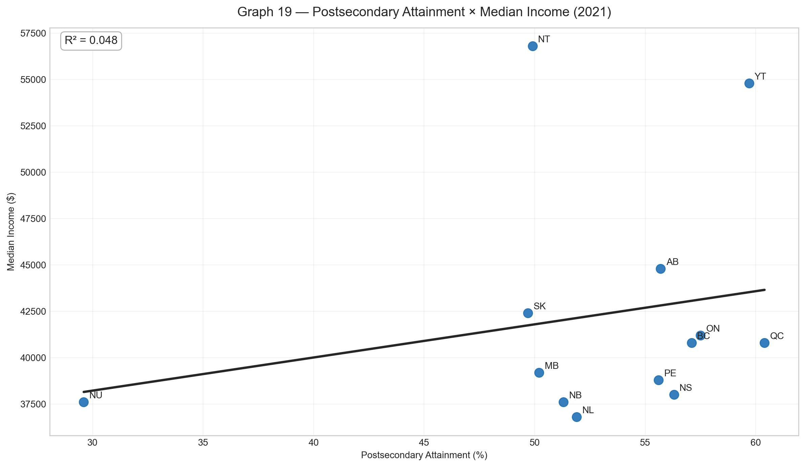
Graph 19 — Census 2021
Cross-provincial scatter with OLS trendline; R² = 0.048.
Human capital proxied by postsecondary attainment explains negligible cross-provincial income variation (R² = 0.048) in this 13-observation cross-section; NT and YT — above-median incomes despite moderate attainment rates — indicate that resource extraction wage premiums dominate any education-productivity channel at the provincial level of aggregation.
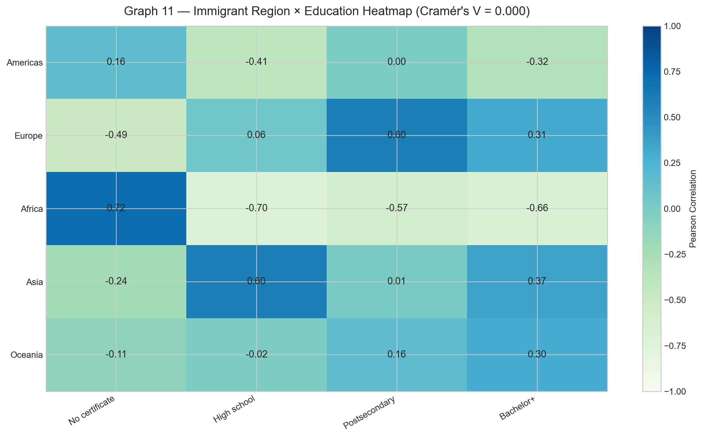
Graph 11 — Census 2021
Pearson correlation between provincial immigrant region shares and education attainment shares across provinces.
African-origin immigrants exhibit a strong positive correlation (r = 0.72) with no-certificate attainment and a strong negative correlation (r = −0.70) with high school completion across provinces, while European immigrants show a pronounced positive association (r = 0.60) with postsecondary attainment; Cramér's V near zero reflects cancellation of opposing region-level effects and does not imply absence of substantively large heterogeneities.
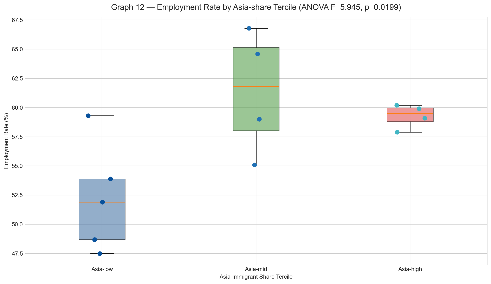
Graph 12 — Census 2021
Box-and-jitter plots of provincial employment rates stratified by tercile of Asian immigrant population share.
Provinces in the middle tercile of Asian immigrant share exhibit significantly higher median employment rates (≈62%) than low-tercile provinces (≈52%), with one-way ANOVA rejecting equal means at the 5% level (F = 5.945, p = 0.020); the non-monotonic pattern — mid-tercile exceeding high-tercile — is more consistent with omitted province-level economic conditions correlated with Asian immigrant settlement than with a direct compositional effect.
Canada's economic-class focus produces an immigrant population with high formal educational credentials — over 60% of principal applicants in the economic class hold a bachelor's degree or higher. Despite this, a well-documented earnings gap persists at landing: IMDB data show that economic-class immigrants earn approximately 60–70% of comparable Canadian-born workers in their first year, with convergence to roughly 85–95% by year 10.
Cross-provincial regression analysis (Graph 13, R² = 0.544) confirms that immigrant origin-region composition is a significant correlate of provincial median income, though the relationship is substantially mediated by industrial structure. The divergence between LIM-AT and LICO-AT poverty metrics (Graphs 9, 15) highlights the need for methodological care when comparing poverty outcomes across geographies with different cost structures.
Settlement patterns, citizenship composition, labour force outcomes, and immigrant-education linkages by province and territory (Census 2021).
Figure CA-10
Share of annual admissions by intended destination province. PNP growth visible post-2005. Source: IRCC.
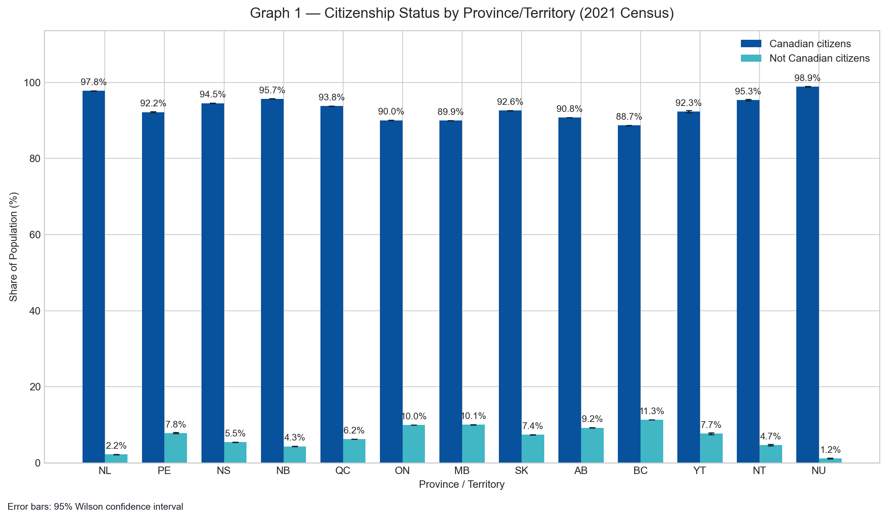
Graph 1 — Census 2021
Canadian citizen and non-citizen shares with 95% Wilson confidence intervals by province/territory.
Canadian citizenship saturation exceeds 88% across all provinces, with Nunavut (98.9%) and Newfoundland (97.8%) exhibiting the highest rates, while British Columbia (88.7%) and Ontario (90.0%) — the two primary immigrant-destination provinces — show the lowest rates, consistent with their higher shares of recent arrivals still within the three-year naturalization waiting period.
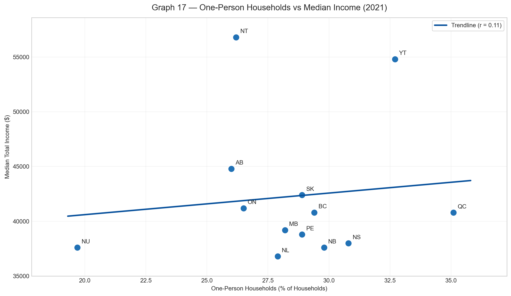
Graph 17 — Census 2021
Cross-provincial scatter with OLS trendline; Pearson r = 0.11.
The near-zero correlation (r = 0.11) between one-person household prevalence and provincial median income indicates that single-person household share is not systematically associated with lower provincial incomes; the null result reflects compositional heterogeneity — high-income urban centres (ON, BC) and resource territories (YT, NT) simultaneously exhibit elevated one-person household rates for structurally distinct demographic and economic reasons.
Ontario continues to receive the largest share of permanent residents (approximately 45%), followed by British Columbia (15%) and Quebec (14%, with its own selection system). However, the PNP has significantly altered settlement dynamics: Manitoba, Saskatchewan, Alberta, and the Atlantic provinces have all seen substantial increases in immigrant inflows since PNP allocations were expanded in the mid-2000s.
The citizenship saturation data (Graph 1) confirms that low-immigration provinces maintain citizenship rates above 94%, providing a baseline against which to assess the integration speed of recent cohorts. Cross-provincial income analysis (Graph 17) suggests that household structure indicators carry limited predictive power for provincial income levels absent controls for industrial composition and resource endowment.
Immigrant origin, sex composition, income gaps, household structure, educational attainment, and occupational segregation (Census 2021).
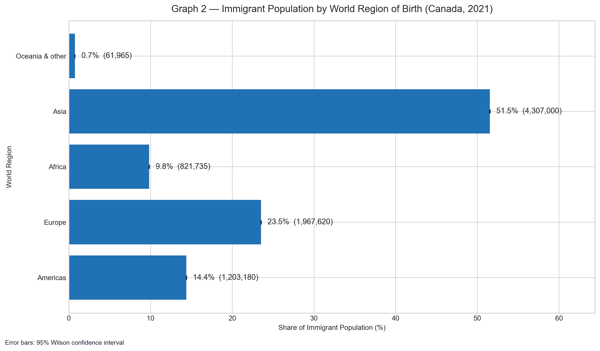
Graph 2 — Census 2021
Share and count of Canada's foreign-born population by world region of birth; error bars are 95% Wilson confidence intervals.
Asia accounts for 51.5% (4.31M) of Canada's foreign-born population — a share exceeding the combined Europe and Americas contributions — reflecting the cumulative effect of post-1990 policy shifts toward skills-based selection and the geographic origins of the principal applicant pool under Express Entry and the Provincial Nominee Program.
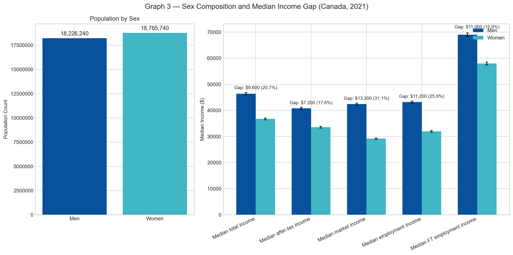
Graph 3 — Census 2021
Population counts by sex (left panel) and median income by income concept for men and women with 95% confidence intervals (right panel).
Across all five income concepts, women's median income is 17–31% below men's; the market income gap (31.1%) substantially exceeds the after-tax gap (17.6%), confirming that progressive taxation and transfer programs attenuate, but do not eliminate, the structural gender income differential — a pattern consistent with OECD-wide evidence on redistributive fiscal incidence.
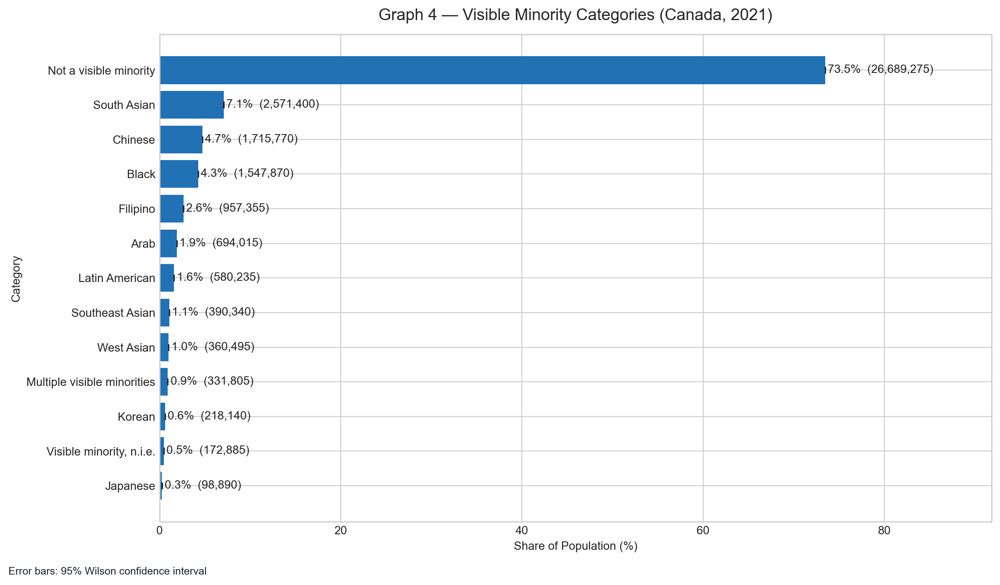
Graph 4 — Census 2021
Share and count of population by visible minority category; error bars are 95% Wilson confidence intervals.
South Asians (7.1%), Chinese (4.7%), and Black Canadians (4.3%) constitute the three largest visible minority groups and together comprise 16.1% of the total population; these shares reflect both historical immigration flows and differential fertility rates, with South Asian communities experiencing the fastest absolute growth in the 2016–2021 intercensal period.
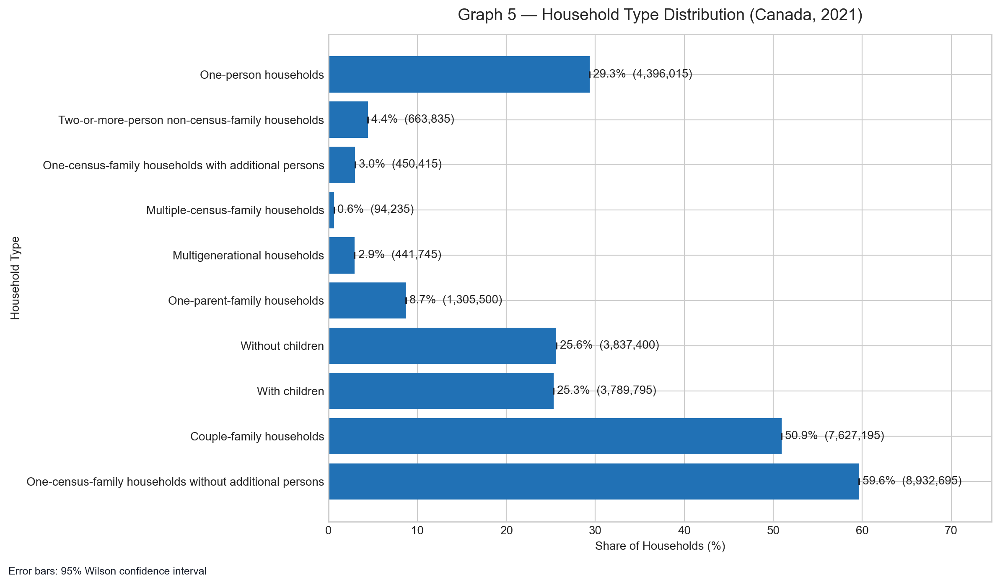
Graph 5 — Census 2021
Share and count of private households by census household type; error bars are 95% Wilson confidence intervals.
One-census-family households without additional persons dominate at 59.6%, while one-person households at 29.3% represent the second most common type, reflecting urbanization-driven household atomization; the 2.9% multigenerational household share is disproportionately concentrated among immigrant communities from South and East Asia, where co-residence norms and settlement economics jointly suppress household dissolution rates.
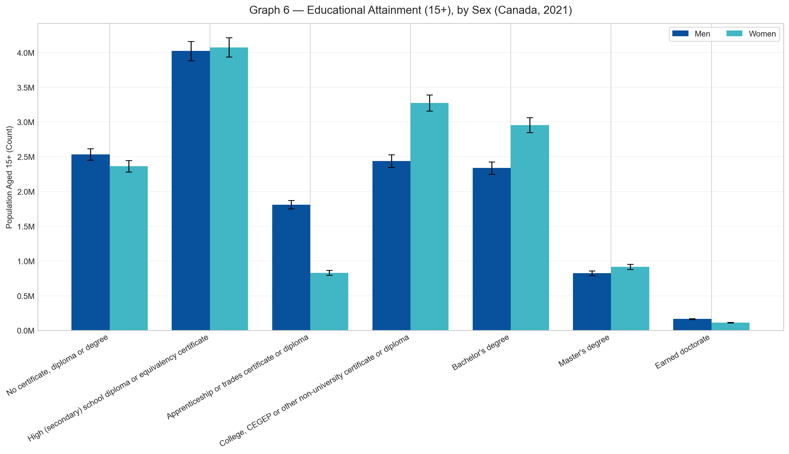
Graph 6 — Census 2021
Population aged 15+ by highest certificate, diploma, or degree and sex; error bars are 95% Wilson confidence intervals.
Women have surpassed men at the bachelor's degree (3.3M vs. 2.5M) and college/CEGEP certificate levels, consistent with the global reversal of the gender education gap among post-1980 birth cohorts; however, men retain a 2.2× advantage in apprenticeship/trades credentials, reflecting persistent gender segregation in vocational training pathways with implications for occupational wage gaps in trade-intensive sectors.
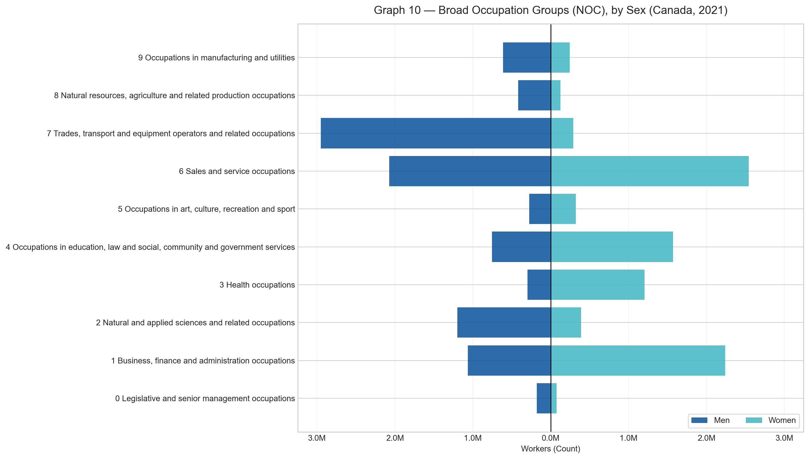
Graph 10 — Census 2021
Diverging bar chart of worker counts by NOC major group and sex (men left, women right).
Trades, transport, and equipment operator occupations are male-dominated (men ≈3.0M vs. women ≈0.1M), while health occupations and business/finance/administration skew heavily female, confirming the persistence of occupational gender segregation across all NOC major groups; sales and service occupations represent the single largest NOC group in absolute terms with near-parity (≈2.0M women, ≈1.9M men), reflecting the feminisation of high-volume service-sector employment.
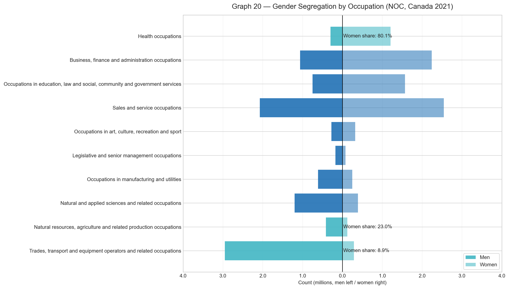
Graph 20 — Census 2021
Diverging bar chart showing men's and women's headcounts by NOC major group with women's share annotated for extreme cases.
Occupational gender segregation is most extreme in trades/transport (women's share: 8.9%) and health occupations (women's share: 80.1%); the magnitude of segregation — as measured by the dissimilarity index implied by these distributions — indicates that substantial cross-occupation reallocation would be required to achieve gender balance, with corresponding implications for wage convergence given the persistent wage penalty in female-dominated fields.
Figure CA-13
Working-age concentration visible in immigrant population. Source: Census 2021.
Figure CA-14
English only, French only, both, neither — by immigration class. Source: IRCC.
Canada's immigrant population is distinguished by high educational attainment and strong working-age concentration, with Asia constituting over half of the foreign-born population (Graph 2). The sex-disaggregated income analysis (Graph 3) documents a persistent gender income gap of 17–31% across income concepts, despite the narrowing of educational attainment gaps (Graph 6) in which women now surpass men at the bachelor's degree level.
Occupational segregation (Graphs 10, 20) remains a structural feature of the Canadian labour market, with trades and transport NOC groups retaining near-complete male dominance (women's share: 8.9%) and health occupations correspondingly female-dominated (80.1%). These patterns interact with educational credential distributions to produce persistent sectoral wage gaps that aggregate income measures partially obscure.